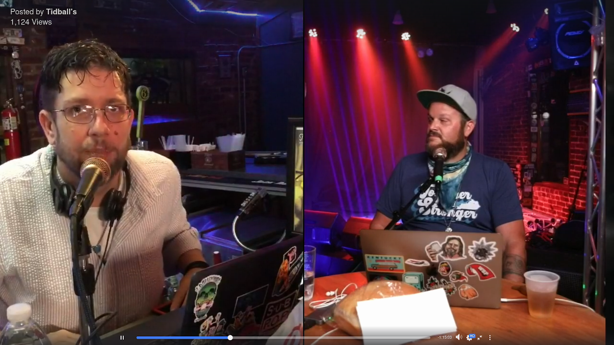
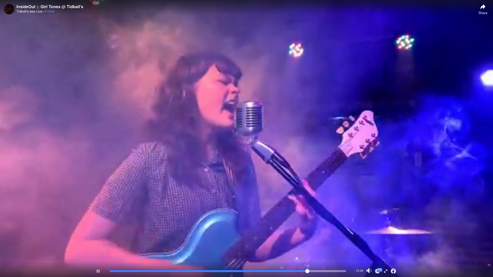
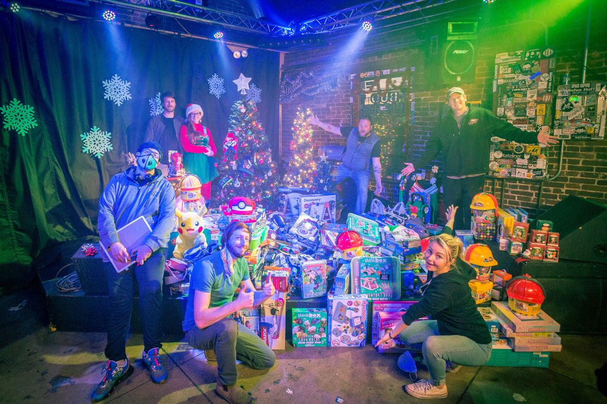
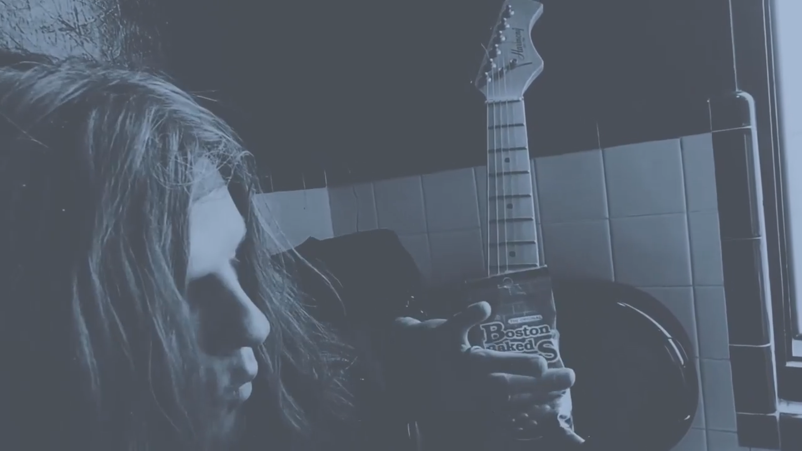

When the Coronavirus pandemic first hit and shutdowns began. No one knew how to react. Our local music venue and bar Tidball's, most known for being the starting point for Grammy award winning Cage the Elephant, decided to find new ways to reach their community.
Oh wait are we on?
Brain Jarvis, David Downing, Nathan Morguelan, Jessi Wurth and myself started hosting a twice weekly two-hour live steam featuring community contributions, phone calls, and general zanyiness.
Truly a collabrotive mind-meld, ideas were abundant, passions high, some toes were stepped on but every member brought unique and essential aspects to the production. Truly a special moment for all us.
The community involvement was truly life changing for all us. Heartfelt messages during calls, an enthustiastuc and dedicated comment section, and even an unforgettable message of love from a new father were both unexpected and greatly appreciated.
And that's to say nothing of the music!
Homegrown Music
Every town says their music community is special, but it's obvious the music community in Bowling Green did something special.
Artists from around Bowling Green and beyond wrote, recorded and performed hours of content in their own homes, that we were lucky enough to share on stream. Collabrations between new and old friends produced some genuinely amazing pieces under extraordinary circumstances.
I can't thank all the artists that contributed enough, overall we estimated around 180 hours of streaming in 2020. 80% of that I'd say was community performances and contributions!
Christmas Finale
Like most good TV shows, InsideOut got a Christmas special, more about that soon.
 